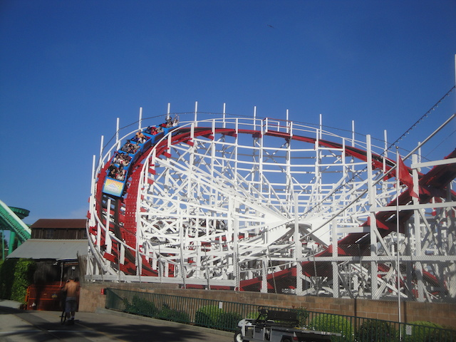
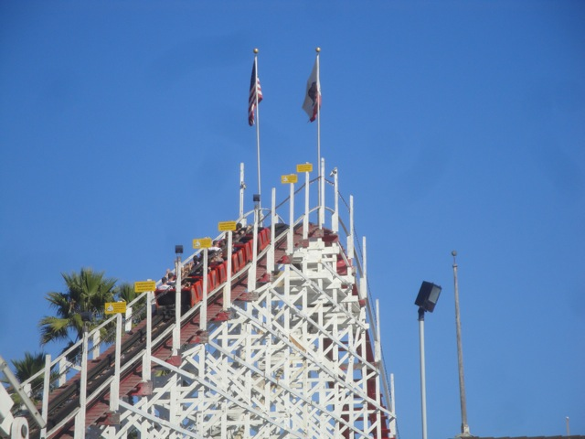
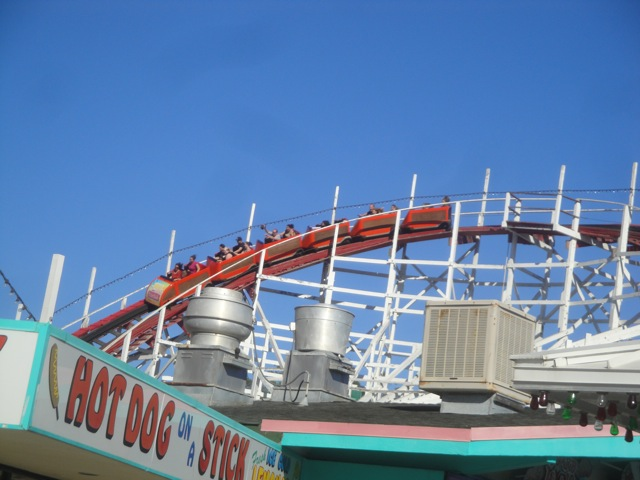

| |
Giant Dipper Review

We're here at Santa Cruz Beach Boardwalk, where we'll be reviewing Giant Dipper. The park's star attraction. You climb in the Morgan Trains, however, unlike most Morgan Trains, these don't annoy me for several reasons. 1: There are no seat dividers to crash into, so you get to slide around everywhere. and 2: It's got just a single lap bar for both people, and it doesn't continue to staple you as the ride goes on. So yeah. That's great. I really think that these types of Morgan Trains should be on more rides such as Collosus and San Diego's Giant Dipper. Anyways, after the lap bar is pulled down, you head down a small drop into a dark tunnel. And while it's not going very fast, it's still very fun to just be turning around in the dark like that. Then out of nowhere, you see....a light. Run!!!! Run towards the light!!!! Now Climb!!!! Climb towards the light!!!!! Yep. You've reached the lifthill. While climbing the lifthill, you get a great view of the Santa Cruz Beach Boardwalk, as well as the Pacific Ocean. However, we don't have time for that, as we're heading down the first drop. While not the greatest first drop ever, it does provide us with a lot of speed, and puts a smile on our faces. We then rise up into a turnaround element, that provides us with a lot of laterals. And due to the modified Morgan Trains without any seat dividers, there's no annoying slam into the seat. Instead you just crash into the person next to you, like on a scrambler. This isn't nearly as annoying as crashing into the seat divider, as the person you're sitting next to isn't rock solid, unless they have a bunch of stuff in their pockets. But even then, it's still better. Because at least with stuff in their pockets, you can tell the other person "MOVE YOUR SH*T!!!!". That tends to fail with seat dividers. Anyways, after that first turnaround, you go through a weird bunny hop with laterals. This provides us with both good airtime, and laterals. A very interesting combination. We then drop under the structure and gain some speed before heading up a small bump before rising up a big hill which gives us a really nice suprise. A strong pop of ejector air. That really puts a smile on your face and has you laughing. We then take a quick break and have a good look at the rest of the Boardwalk as we head around the turnaround, however, the turnaround then morphs into a sort of helix that breifly gives us some more speed. We then rise up and slightly turn again. And in the middle of getting some laterals, we then drop back down into the structure, giving us some good airtime, in mid laterals. A very fun experience. Then while under the structure, we fly over two airtime hills. While it's not extreme airtime or anything, these hills do provide us with airtime and do make us smile. Then we come back into another turnaround, that goes right underneath the first turnaround of the ride. This gives us some good laterals along with some good headchoppers. After that, we go through another lateral airtime hill, which gives us some more good airtime and laterals. And from here on out, it's just a regular bunny hop with decent airtime, a small hill that doesn't really do much or give us much airtime, and then rise up into the brakes. Damn. This ride is good. Really really good. Without a doubt, one of California's best woodies, and one hell of a good ride. If you don't ride this while at the Santa Cruz Beach Boardwalk, then I pity you, for you missed out big time. Now go back again and ride it.
8/10
Location: Santa Cruz Beach Boardwalk
Opened: 1924
Built by: Arthur Looff
Last Ridden: April 26, 2015
Giant Dipper Photos




|